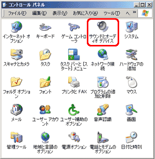
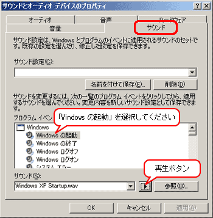

Windows システム音声再生手順

１．【スタート】⇒【設定】⇒【コントロールパネル】を選択してください。

２．【コントロールパネル】のウィンドウが開いたら【サウンドとオーディオ デバイス】アイコン（左図参照）をダブルクリックしてください。

３．【サウンドとオーディオ デバイス】のプロパティ（図参照）が開いたら【サウンド】タブをクリックしてください。
【サウンド】タブが開いたら、再生する音を選択します。
【Windows の起動】（図参照）を選択して下さい。
再生ボタン（図参照）をクリックして下さい。
「再生ボタン」をクリックするとWindows起動時の音が再生されます。
【サウンド】タブが開いたら、再生する音を選択します。
【Windows の起動】（図参照）を選択して下さい。
再生ボタン（図参照）をクリックして下さい。
「再生ボタン」をクリックするとWindows起動時の音が再生されます。